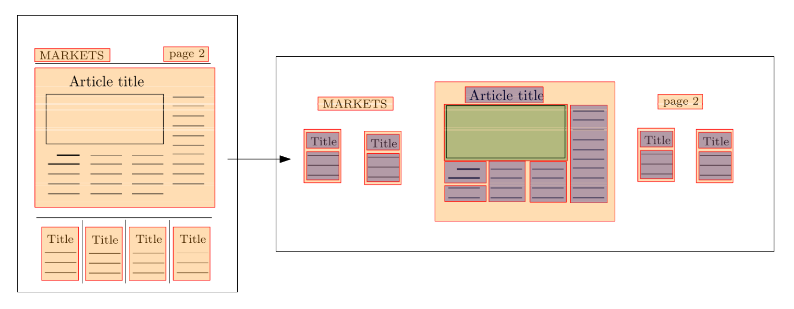
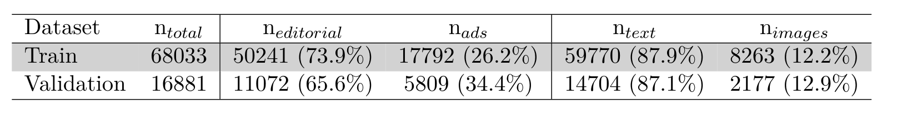
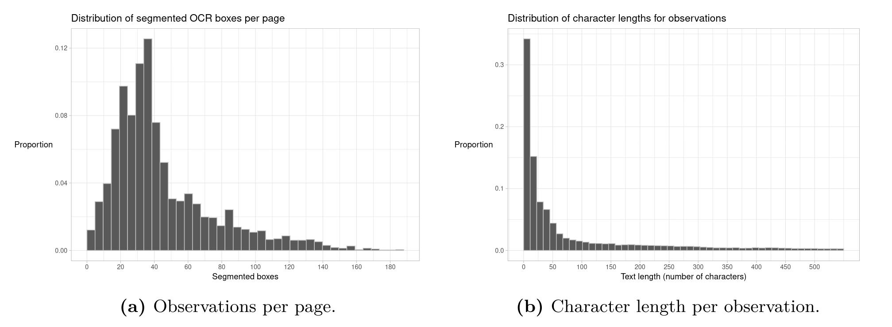
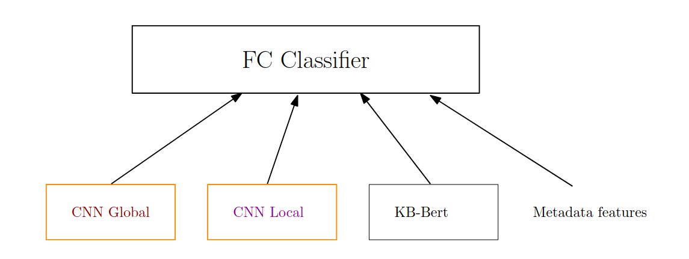
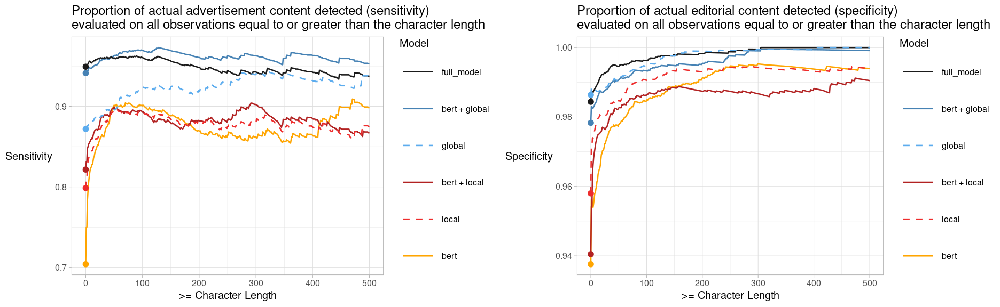
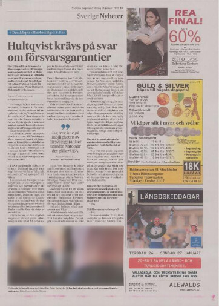
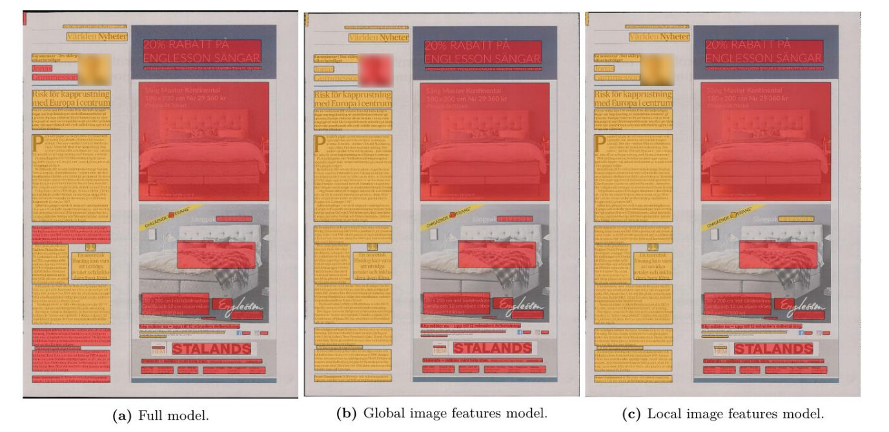
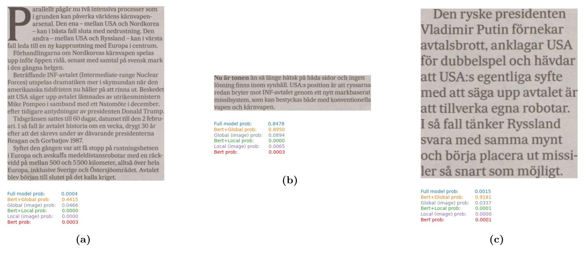
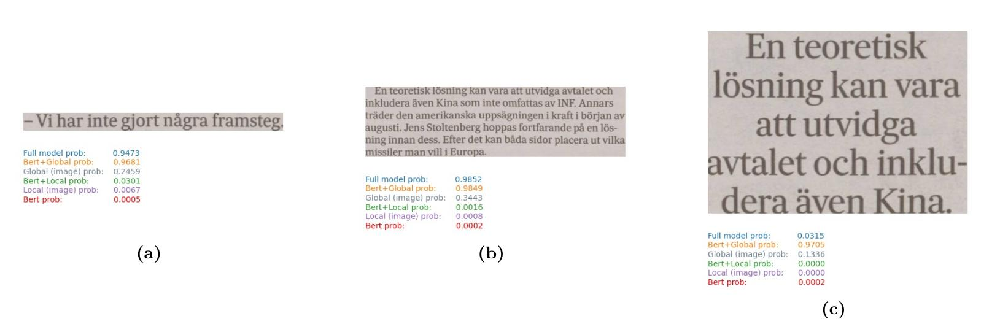

The process of digitizing historical newspapers at the National Library of Sweden involves scanning physical copies of newspapers and storing them as images. In order to make the scanned contents machine readable and searchable, OCR (optical character recognition) procedures are applied. This results in a wealth of information being generated from different data modalities (images, text and OCR metadata). In this article we explore how features from multiple modalities can be integrated into a unified advertisement classifier model.
The digital archives at The National Library of Sweden hold millions digitized of historical newspaper pages. Researchers accessing these collections for quantitative research purposes commonly inquire whether it is possible to search or filter the contents based on their research needs. One such request is to filter out all advertisement content in a query and select only the editorial content.
While OCR digitizes the text in scanned images of newspaper pages, it is unfortunately not able to determine whether the text it has digitized is an article title, the body text of an article or an advertisement. Such contextual information is lost in the process of digitization. An important aspect of our work at KBLab is thus to develop automated methods to recover the information that is implicitly present in the structure and layout of newspaper pages, but cannot as of yet adequately be captured by digitization tools.
A human reader looking at a newspaper page is generally able to distinguish advertisements from editorial content quickly and accurately at a glance. Advertisements tend to be visually distinct, featuring bright colorful designs, all capitalized text, large and distinctive fonts, and inverted text colors (light color text against dark backgrounds). A quick visual pass is therefore more often than not all that is required. Wherever any ambiguity persists, it can be resolved by reading a portion of the text. The presence of named commercial entities and logos along with advertisement-specific language tends to clear up any lingering uncertainty.
Ideally, a machine learning model built to classify advertisements should be able to incorporate information from an array of senses similar to the ones we are using when making a determination. And since the way we classify content is through a combination of visual and contextual language clues, we aim for our model to do the same.
Our objective with this article is to propose and evaluate an advertisement classifier trained as a single joint model using three diverse set of features: images, text and metadata. In order to further investigate the contribution of each component part of this model, ablation studies are performed where selected model components are omitted in the training.
The dataset consists of 35 sampled editions of the newspaper Svenska Dagbladet from 2017-03-29 to 2019-05-25 previously used for newspaper section classification (Rekathati, Hurtado Bodell, and Magnusson, n.d.). Stratified sampling was performed based on weekday, meaning 7 editions were randomly sampled for each day of the week (Monday, Tuesday, …) during the period.
When OCR procedures are applied to newspaper page images they perform a segmentation of the contents of the page. Figure 1 below illustrates how the procedure may look like. The segmentation process first attempts to detect article zones (orange). The key word here is attempts, as it seldom is completely successful. Within the detected article zones it performs another pass to detect text blocks (blue) and image blocks (green). The unit of observation, i.e. the data we are going to train and predict on in this work, consists of the text and image blocks (blue and green boxes).

Figure 1: OCR segmentation of newspaper content results in identified blocks of text (blue) and images (green). These are the observational unit we are trying to classify as either editorial or advertisement content.
The 35 sampled editions were manually annotated. Every observation (segmented text or image box) was assigned a label of either ad or editorial. Ads include sponsored, paid for and commercial content including advertisements for charity organizations and including the newspaper’s own campaigns for subscription services, wine tastings, workshops, etc. However, links and information referring readers to extra coverage of news stories online were annotated as editorial.
A visual annotation tool was used to label the observations. This tool highlighted existing observations when the annotator hovered over them in an image. A label was assigned by clicking over the highlighted area. In order to annotate the data as efficiently as possible, the annotation task was divided in the following steps:
editorial. If the page consists of a full page ad, mark all the observations to be annotated as ad. If the page contains a mix of editorial and commercial content, mark the page as mixed.mixed. In these pages all segmented boxes containing commercial content are annotated as ad using a visual annotation tool (see Figure 2 to the right).editorial.As a general rule this process was quick and yielded mostly accurate results. However, since the annotator was required to hover over an area of the picture for the segmented box to be highlighted, it was possible for some segmented boxes to go undetected and unlabeled in step 2 of the annotation procedure. A future more flexible and fool proof method of annotating would be to select the the entire area covered by ads and then later – if necessary – assign all segmented boxes which fall into that area to the corresponding class. We will likely switch to this annotation strategy in the future, as it works independently of whatever OCR software was used. That is, even if the OCR and its segmentation were to change, the annotations would still be valid. Labeling the area as opposed to the OCR boxes would further allow us to train object detection and semantic segmentation models.
The dataset was divided into a train and validation set using a time series split. The training set consisted of editions from 2017-04-08 to 2018-10-16, and the validation set editions from 2019-01-08 to 2019-04-05.

Most of the segmented boxes were identified as text boxes (around \(88\%\)), whereas only roughly \(12\%\) were detected as images by the OCR software. A quarter to a third of the content in the newspaper is ads.

Figure 3: Histograms over the distribution of segmented boxes (i.e. observations) per newspaper page (Fig. 3a), and the distribution of character lengths over observations (Fig. 3b)
The mean number of segmented boxer per newspaper page in the samples was 44. The majority of these boxes contained less than 50 characters of text all in all.
The majority of features used for classification were extracted from pretrained vision and language models. This feature extraction process is described in the method. Regular tabular features consisted of metadata relating to the segmented boxes. The OCR process logs positional information of each segmented box. In other words the \(x\) and \(y\) coordinates of the upper leftmost corner of the segmented box in terms of pixel position, as well as width extending rightwards from \((x, y)\) as well as height extending downwards from \((x,y)\). Additionally, weekday (Monday, Tuesdary, …) was used as a categorical feature.
Three different neural networks are used to extract useful features from images and text. Their respective outputs are concatenated and connected in a fully connected (FC) classifier. Additional metadata features from the OCR process are also concatenated to the feature vector fed as input to this FC classifier. In particular, positional information is added, since CNNs are designed to be (approximately) invariant against translations (movement) of objects within an image. That is, they are designed to output similar activations regardless of where an object happens to appear in an image. However, for our advertisement model, we want it to be able to reason spatially.

Figure 5: The full advertisement classifier model. In the results section we remove and isolate certain components of the model to investigate the contribution of each part.
All model parameters in the above model are set to be trainable in each of the models. Thus, they are all jointly “fine tuned” for the classification task of detecting advertisements.
Two, initially identical, CNN models are trained side by side. One to extract features from a zoomed out “global” level, and the other to focus on learning “local” zoomed in features. The local CNN model takes as input images of the cropped segmentation boxes depicted in Figure 4 and Figure 1. We crop the segmented boxes by using the available positional information: \((x, y)\), width and height. Thus, one such cropped image box exists for every observation in our dataset.
The second CNN model, in contrast, receives an image of the entire newspaper page where the observation in question is located. Here, the rationale being that the context surrounding an observation is important in determining whether the observation is an or not. A consequence of this is that the same newspaper page image is passed as input to the model for however many segmented boxes exist on said page. Recall from the histograms in Figure 3, that a mean of 44 segmented boxes (observations) exist for each newspaper page. Each time the global image is fed to the model, it is therefore paired with a different local segmented box however.
The backbone model used for both CNNs is an Efficientnet-B2 (Tan and Le 2019) with pretrained Imagenet weights. The classification head is discarded and instead the output of the convolutional layers are captured. This output is a 1408-dimensional vector.
Swedish BERT base (Malmsten, Börjeson, and Haffenden 2020) is applied as a feature extractor for any text associated with the segmented boxes. Commonly the embedding of the [CLS] token is extracted and used to fine tune models for downstream classification tasks (Devlin et al. 2018). Here, we follow this procedure and extract the 768-dimensional embedding corresponding to the [CLS] token and concatenate it to the previously extracted image features.
The observations in our data do not always have text content associated with them. Images, for example, have no OCR text fields. Segmented text detected in observations also vary in length all the way from single characters to series of paragraphs. In this work the maximum sequence length is set to 64. Padding is applied to the sequences of all observations whose number of tokens do not reach 64. This means that [PAD] tokens are added until we reach a sequence length of 64. Conversely, we truncate all observations exceeding a sequence length of 64 tokens.
No preprocessing or cleaning of the text is performed. KB-BERT is a cased model. However, “cased” does not take into account all caps text as well as it does uncased text. In advertisements all caps text occur fairly common. The unrecognized tokens then often gets split up in many subtoken components or tokenized as [UNK] (unknown).
A time series split was chosen for the train and validation sets. This decision was informed by two main reasons:
Only five variables were added from OCR metadata. Positional information: x, y, width, height; and the weekday which was treated as a categorical variable for which a separate embedding layer was created. Categorical variables can be treated similar to word/token embeddings in language models. We ask our model to learn useful embeddings for the weekdays, just like BERT learns token embeddings for its vocabulary.
In the end a metadata feature vector of 7 dimensions was concatenated to the BERT and image features.
A fully connected classifier was built on top of the previously mentioned methods. The FC classifier consisted of a single hidden layer with 512 neurons. As input it took the \(1408+1408+768+7\) features from images, text and metadata respectively. The hidden layer applied a ReLU activation and a dropout layer with a dropout fraction of \(0.3\). The last output layer was a single neuron with sigmoid activation and binary cross entropy loss.
The Adam optimizer was used with an initial learning rate of 0.00002. This learning rate was decreased by a factor of 0.65 every epoch. Models were trained 2 to 8 epochs, depending on when validation performance was observed to level off. A batch size of 16 was used for the full model. The smaller models were trained with larger batch sizes, and in general the learning rate was adjusted higher with increasing batch size.
All models were trained on a GeForce RTX 2080 TI. Total training time varied from circa 15 minutes for the smaller models to about 2 hours for the largest model.
Results seem to indicate that all component models are useful. Some (global image features) provide a bigger boost than others, but all of them do contribute to a better overall performance of the full prediction model. The results displayed in the table below show that the full model reaches an accuracy of \(97.2\%\). The model’s sensitivity, the proportion of actual ads it detects and labels as ad is \(94.9\%\), whereas its specificity (proportion of actual editorial content it detects as editorial) reaches \(98.4\%\). We have used a decision threshold of \(0.5\) to decide whether an observation should be classified as ad (\(>0.5\) gets classified as ad). Researchers using these results can themselves adjust the decision threshold to boost either specificity or sensitivity depending on what is most important to them. Most researchers likely want a high specificity, i.e. for the model to retain as much of the actual editorial content as possible.
The CNN Global model was a particularly strong feature extractor. It seemingly was succesful in incorporating spatial information when generating predictions. Since this model only saw the entirety of the newspaper page as input, it should not be able to reason very well about the spatial position of ads. Its performance seems to suggest that either i) the metadata features allow the model to combine image features with spatial information, or ii) the CNN architecture is not entirely invariant to objects being appearing at different locations of an image (translation invariance).
library(readr)
library(dplyr)
library(ggplot2)
library(reactable)
df <- arrow::read_feather("df_preds.feather")
metrics_by_txtlength <- function(txt_len,
df,
preds_col,
probs_col,
decision_threshold = 0.5,
observation_type = NA){
df <- df %>%
filter(text_length >= txt_len)
if (!is.na(observation_type)){
df <- df %>%
filter(type == observation_type)
} else{
observation_type = "All"
}
df[, preds_col] <- 0
df[df[, probs_col] > decision_threshold, preds_col] <- 1
conf_mat <- table(df %>% pull(preds_col), df %>% pull(label))
conf_mat <- caret::confusionMatrix(conf_mat, positive="1")
return(tibble(accuracy = conf_mat$overall["Accuracy"],
sensitivity = conf_mat$byClass["Sensitivity"],
specificity = conf_mat$byClass["Specificity"],
threshold = decision_threshold,
text_length = txt_len,
model = preds_col,
type = observation_type))
}
preds_col <- c("preds_bertgloballocal", "preds_bertglobal", "preds_global",
"preds_local", "preds_bertlocal", "preds_bert")
probs_col <- c("probs_bertgloballocal", "probs_bertglobal", "probs_global",
"probs_local", "probs_bertlocal", "probs_bert")
observation_type <- c(NA, "Image", "Text")
res <- vector(mode = "list", length = length(observation_type) * length(preds_col))
i <- 1
for (j in 1:6){
for (type in observation_type){
res[[i]] <- metrics_by_txtlength(txt_len=0,
df,
preds_col = preds_col[j],
probs_col = probs_col[j],
decision_threshold = 0.5,
observation_type = type)
i <- i + 1
}
}
df_table <- do.call(bind_rows, res)
df_table["model"] <- recode(df_table$model,
preds_bertgloballocal = "Full model",
preds_bertglobal = "Bert + Global",
preds_global = "Global",
preds_local = "Local",
preds_bertlocal = "Bert + Local",
preds_bert = "Bert")
reactable(df_table %>% select(model, accuracy, sensitivity, specificity, type),
defaultSorted = c("type", "accuracy"),
highlight = TRUE,
defaultPageSize = 9,
# searchable = TRUE,
columns = list(
model = colDef("name" = "Model"),
accuracy = colDef(name = "Accuracy",
format = colFormat(digits = 3),
defaultSortOrder = "desc"),
sensitivity = colDef(name = "Sensitivity",
format = colFormat(digits = 3)),
specificity = colDef(name = "Specificity",
format = colFormat(digits = 3)),
type = colDef(name = "Data subset",
format = colFormat(digits = 3))
),
rowStyle = JS("function(rowInfo) {
if (rowInfo.row['model'] == 'Full model') {
return { background: 'rgba(0, 0, 0, 0.05)' }
}
}"
))
In general specificity is higher than sensitivity. This can be seen as a positive trait of all models as researchers tend to care more about the model retaining as much editorial content as possible (even if this means some ads slip through). Specificity also tends to increase with when more text is available in the segmented OCR box. Most long text sequences tend to be paragraphs from editorial content. It is comparatively rare for ads to feature long cohesive text paragraphs. The models also generally perform better on text data as opposed to image data.
Upon further inspection of the model predictions, it became apparent that about one third to one half of the faulty predictions were in fact cases where the annotator had mislabeled examples. Most annotation mistakes occurred as a result of not finding all segmented advertisement boxes on a given page. This was in part due to annotator error, but in part – we discovered – also because it was not possible to highlight some of the smaller segmented boxes with the annotation tool.
library(gridExtra)
metrics_list <- vector("list", length = 6)
i <- 1
for (j in 1:length(metrics_list)){
metrics_list[[i]] <- purrr::map_dfr(.x = 0:500,
df = df,
.f = metrics_by_txtlength,
preds_col = preds_col[j],
probs_col = probs_col[j],
decision_threshold = 0.5,
observation_type = NA)
i <- i + 1
}
df_metrics <- do.call(bind_rows, metrics_list)
df_metrics <- df_metrics %>%
mutate(model = stringr::str_remove(model, "preds_"),
model = recode(model,
"bertgloballocal" = "full_model",
"bertglobal" = "bert + global",
"bertlocal" = "bert + local"))
p1 <- ggplot(df_metrics, aes(x = text_length,
y = sensitivity,
color = model,
linetype = model,
size = model)) +
geom_line(size = 0.3) +
geom_point(data = df_metrics[df_metrics$text_length == 0, ],
size = 0.7,
show.legend = FALSE) +
theme_light(base_size = 5) +
scale_linetype_manual(values = c("full_model" = 1, "bert + global" = 1,
"global" = 2, "bert + local" = 1,
"local" = 2, "bert" = 1),
breaks = c("full_model", "bert + global", "global", "bert + local",
"local", "bert")) +
scale_color_manual(values = c("full_model" = "grey10", "bert + global" = "steelblue",
"global" = "steelblue2", "bert + local" = "firebrick",
"local" = "firebrick2", "bert" = "orange"),
breaks = c("full_model", "bert + global", "global", "bert + local",
"local", "bert")) +
scale_size_manual(values = rep(0.5, 6),
breaks = c("full_model", "bert + global", "global", "bert + local",
"local", "bert")) +
labs(x = ">= Character Length",
y = "Sensitivity",
title = "Proportion of actual advertisement content detected (sensitivity)
evaluated on all observations equal to or greater than the character length",
color = "Model",
linetype = "Model") +
guides(color = guide_legend(override.aes = list(size=0.3))) +
theme(axis.title.y = element_text(angle = 0, vjust = 0.5))
p2 <- ggplot(df_metrics, aes(x = text_length,
y = specificity,
color = model,
linetype = model,
size = model)) +
geom_line(size = 0.3) +
geom_point(data = df_metrics[df_metrics$text_length == 0, ],
size = 0.7,
show.legend = FALSE) +
theme_light(base_size = 5) +
scale_linetype_manual(values = c("full_model" = 1, "bert + global" = 1,
"global" = 2, "bert + local" = 1,
"local" = 2, "bert" = 1),
breaks = c("full_model", "bert + global", "global", "bert + local",
"local", "bert")) +
scale_color_manual(values = c("full_model" = "grey10", "bert + global" = "steelblue",
"global" = "steelblue2", "bert + local" = "firebrick",
"local" = "firebrick2", "bert" = "orange"),
breaks = c("full_model", "bert + global", "global", "bert + local",
"local", "bert")) +
scale_size_manual(values = rep(0.5, 6),
breaks = c("full_model", "bert + global", "global", "bert + local",
"local", "bert")) +
labs(x = ">= Character Length",
y = "Specificity",
title = "Proportion of actual editorial content detected (specificity)
evaluated on all observations equal to or greater than the character length",
color = "Model",
linetype = "Model") +
guides(color = guide_legend(override.aes = list(size=0.3))) +
theme(axis.title.y = element_text(angle = 0, vjust = 0.5))
grid.arrange(p1, p2, ncol=2)

Figure 6: The plots above display the sensitivity and specificity respectively for all observations of equal or greater length than the specified character length on the x-axis. In general researchers tend to be interested in conducting research on editorial content. Detecting and assigning correct labels to actual editorial content (specificity) is therefore of importance.
The majority of predictions made by the full model are accurate. Below is an example where ads and editorial content are mixed on the same newspaper page.

Our multimodal advertisment classifier did not have much trouble separating the ads on the right side from the editorial content on the left. It made only a handful of small mistakes.
Next, we chose to display predictions on a page where our full model performed uncharacteristically poorly. These predictions can be seen in Figure 7 below. The example also works great to display how the global image features model manages to spatially reason about the location of advertisements on a page.

Figure 7: The predictions of three different models. Ad (red) and editorial (yellow). The global image features model seems to be able to incorporate spatial information in its predictions. Possibly from the metadata features that were added, but possibly also from learning specific ads-on-the-right-side or ads-on-the-left-side type of neuron signals whenever certain parts of the image has lots of color and images.
The Global image features model occasionally displays problematic behavior when paired up with the BERT model. We haven’t been able to figure out exactly why, but the combination of these two models occasionally seems to cause confusion in spatial reasoning. From all of the individual component models, we see that the Global image feature model is the one most unsure in its predictions about whether the editorial article paragraphs are actually editorial content. This uncertainty gets magnified for some reason when it is paired up with Bert. Further studies would be useful to investigate what causes this behavior. An especially interesting approach would be to feed parts of pages as input to the network as opposed to the entire page (expanding the area around the existing observation and cropping more of it).
Advertisement observations generally exhibit strong spatial correlation, as do editorial content. Ad observations tend to be found close to other ad observations, and vice versa. Thus we want to incorporate information from the area surrounding any given observation, while at the same time potentially tempering any potential problematic behavior from including an entire newspaper page. Either case, the occasional spatial confusion of the global model warrants further study.

Figure 8: Example of output confidence score of the different component models in classifying a given observation to the class ad.
We can see that the combination of BERT+Global sometimes causes inconsistent and problematic predictions. All predictions displayed in Figure 8 and Figure 9 belong to the editorial class. However, the BERT+Global model confidently predicts them all as ad despite its two component models’ scores being below 0.5 for all observations.

Figure 9: Model score for predicting ad.
Were the positional metadata features at all useful for model prediction? An easy way to investigate is by checking the BERT model’s predictions on images. BERT should not be able to predict images without metadata features. In fact, we can see in the table below that BERT without positional metadata features resorts to predicting editorial for every single image it encounters. This makes sense as editorial is the majority class. When faced with a complete absence of useful information, the model defaults to guessing the most frequently occurring outcome. The distribution of predictions of the BERT model with and without metadata features is as follows:
Similarly, the global CNN model should have trouble knowing what to predict when it is fed the same image of the entire newspaper page as input for every observation within a page. The performance does deteriorate somewhat, but it still performs surprisingly well in away that is quite difficult to explain.
The most obvious avenue for improvement is switching over to an alternate annotation method where we label the area covered by ads as opposed to explicitly labeling the OCR segmentation boxes. First and foremost because it is quicker and less error prone, but also because the OCR segmentation boxes can indirectly be annotated once we have area annotations. We can check whether the area of the OCR segmentation intersects with the labeled advertisement area beyond some threshold. Furthermore, a changed annotation approach allows for more flexibility in model choice. It opens up opportunities for applying object detection and semantic segmentation models.
Another easy way to boost the score of the model is to perform some post processing of the predictions. If an editorial prediction is completely surrounded by advertisement predictions, it is quite likely that the editorial prediction label was mistaken. Same goes for ad predictions surrounded on all sides by editorials. Simple postprocessing of can probably yield a boost in predictive performance.
Finally, the ultimate advertisement model should be context aware, much like modern transformer-based language models. Currently, we crudely incorporate the context by supplying an image of the entire page as input to one of the CNN models. This can most likely be improved via some kind of a self-attention approach applied on the image embeddings of observations within a newspaper page.
Code (without data) can be found at https://github.com/kb-labb/ad_classification .
Devlin, Jacob, Ming-Wei Chang, Kenton Lee, and Kristina Toutanova. 2018. “BERT: Pre-Training of Deep Bidirectional Transformers for Language Understanding.” CoRR abs/1810.04805. http://arxiv.org/abs/1810.04805.
Malmsten, Martin, Love Börjeson, and Chris Haffenden. 2020. “Playing with Words at the National Library of Sweden – Making a Swedish Bert.” http://arxiv.org/abs/2007.01658.
Rekathati, Faton, Miriam Hurtado Bodell, and Måns Magnusson. n.d. “Efficient Annotation of Newspaper Sections.”
Tan, Mingxing, and Quoc V. Le. 2019. “EfficientNet: Rethinking Model Scaling for Convolutional Neural Networks.” In ICML.
If you see mistakes or want to suggest changes, please create an issue on the source repository.
For attribution, please cite this work as
Rekathati (2021, March 28). The KBLab Blog: A multimodal approach to advertisement classification in digitized newspapers. Retrieved from https://kb-labb.github.io/posts/2021-03-28-ad-classification/
BibTeX citation
@misc{rekathati2021a,
author = {Rekathati, Faton},
title = {The KBLab Blog: A multimodal approach to advertisement classification in digitized newspapers},
url = {https://kb-labb.github.io/posts/2021-03-28-ad-classification/},
year = {2021}
}